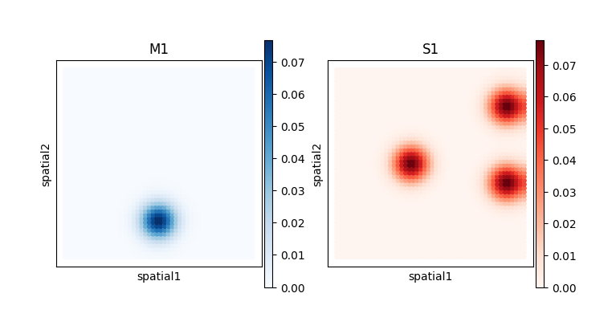
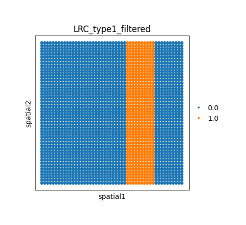
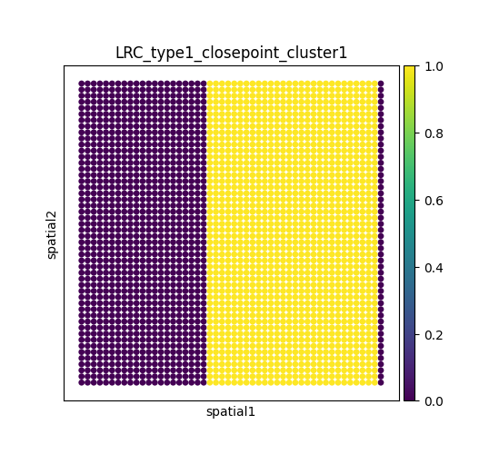
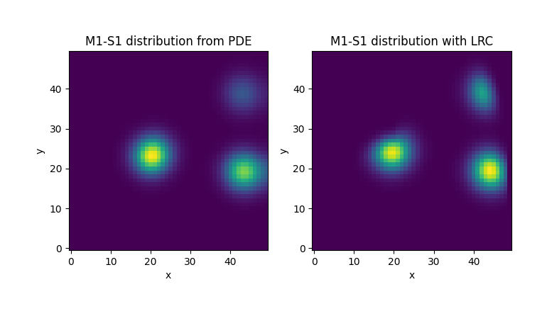

Toy example 1
[6]:
import os
import numpy as np
import pandas as pd
import scanpy as sc
import squidpy as sq
import matplotlib.pyplot as plt
import metachat as mc
[8]:
# setting work dictionary
os.chdir("/home/Project/MetaChat_test/toy_example")
Data preprocessing
Multi-omics data from simulation
[9]:
adata = sc.read("data/example1/adata_example1.h5ad")
adata
[9]:
AnnData object with n_obs × n_vars = 2500 × 2
obsm: 'spatial'
[10]:
fig, ax = plt.subplots(1, 2, figsize = (8,4))
sq.pl.spatial_scatter(adata = adata,
color = "M1",
size = 80,
cmap = "Blues",
shape = None,
ax = ax[0])
ax[0].invert_yaxis()
ax[0].set_box_aspect(1)
sq.pl.spatial_scatter(adata = adata,
color = "S1",
size = 80,
cmap = "Reds",
shape = None,
ax = ax[1])
ax[1].invert_yaxis()
ax[1].set_box_aspect(1)
plt.show()
WARNING: Please specify a valid `library_id` or set it permanently in `adata.uns['spatial']`
WARNING: Please specify a valid `library_id` or set it permanently in `adata.uns['spatial']`

Metabolite-sensor database construction
[11]:
M_S_pair = [['M1', 'S1', 'type1']]
df_MetaSen = pd.DataFrame(M_S_pair)
df_MetaSen.columns = ['Metabolite', 'Sensor', 'Long.Range.Channel']
Long-range channels
[12]:
LRC_channel = np.load('data/example1/LRC_channel.npy')
adata.obs['LRC_type1_filtered'] = LRC_channel.flatten()
adata.obs['LRC_type1_filtered'] = adata.obs['LRC_type1_filtered'].astype('category')
[13]:
fig, ax = plt.subplots(figsize = (4,4))
sq.pl.spatial_scatter(adata = adata,
color = "LRC_type1_filtered",
size = 80,
shape = None,
ax = ax)
ax.invert_yaxis()
ax.set_box_aspect(1)
plt.show()
WARNING: Please specify a valid `library_id` or set it permanently in `adata.uns['spatial']`

[14]:
mc.pp.compute_longRangeDistance(adata = adata,
database_name = "msdb_example1",
df_MetaSen = df_MetaSen,
LRC_name = ["type1"],
dis_thr = 10,
k_neighb = 5,
LRC_strength = 4,
plot = True,
spot_size = 1)
Compute spatial distance without long-range channel...
There are 1 pairs were found from the spatial data.
Compute new spatial distance incorporating long-range channel of type1

Construct network graph of long-range channel among 5 neighborhoods...
Calculate the shortest path distance from the source to the target using the shortest path algorithm...
For the long-range case of cluster 1...
100%|███████████████████████████████████████████████████████████████████████████████████████████████████████████████████████████████████████████████████████████████████████████████████████████████████████████████████████████████████████████████████████████████████| 500/500 [03:56<00:00, 2.11it/s]
Rearrange distance matrix...
For the long-range case of cluster 1...
100%|████████████████████████████████████████████████████████████████████████████████████████████████████████████████████████████████████████████████████████████████████████████████████████████████████████████████████████████████████████████████████████████████| 1400/1400 [00:05<00:00, 264.27it/s]
Finished!
[15]:
# In the case of with LR Channel
mc.tl.metabolic_communication(adata = adata,
database_name = 'msdb_example1',
df_MetaSen = df_MetaSen,
LRC_type = ["type1"],
dis_thr = 15,
cot_weights = (1.0,0.0,0.0,0.0),
cot_eps_p = 0.25,
cot_rho = 1.0,
cost_type = 'euc')
adata.write('data/example1/inference_result.h5ad')
There are 1 pairs were found from the spatial data.
[16]:
MCC_PDE = np.load('data/example1/pde_result.npy')
MCC_infer = adata.obsm['MetaChat-msdb_example1-sum-receiver']['r-M1-S1'].values.reshape(50,50)
[19]:
fig, ax = plt.subplots(1,2, figsize = (7,14))
ax[0].imshow(MCC_PDE[2].T, cmap='viridis', origin='lower')
ax[0].set_xlabel('x')
ax[0].set_ylabel('y')
ax[0].set_title('M1-S1 distribution from PDE')
ax[0].set_box_aspect(1)
ax[1].imshow(MCC_infer.T, cmap='viridis', origin='lower')
ax[1].set_xlabel('x')
ax[1].set_ylabel('y')
ax[1].set_title('M1-S1 distribution with LRC')
ax[1].set_box_aspect(1)
plt.tight_layout()
